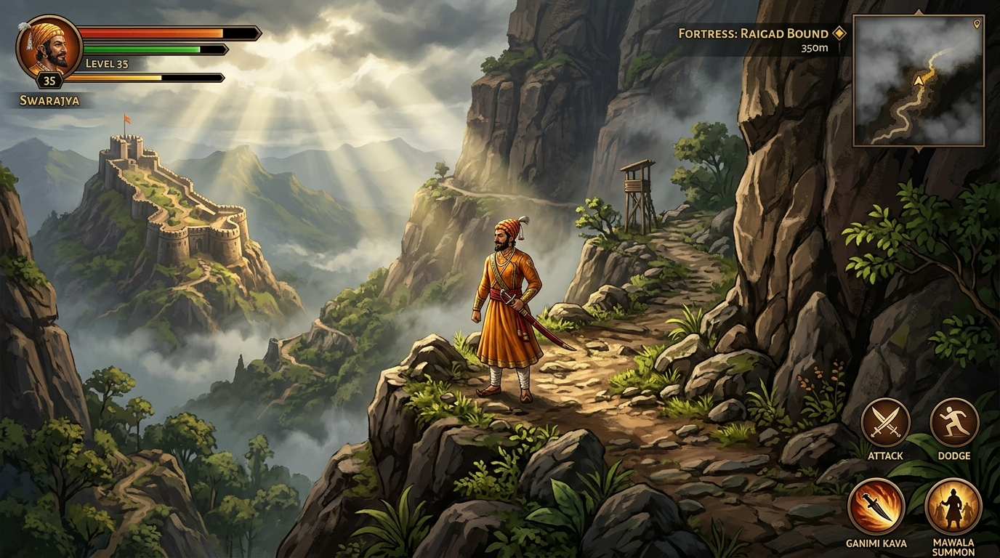
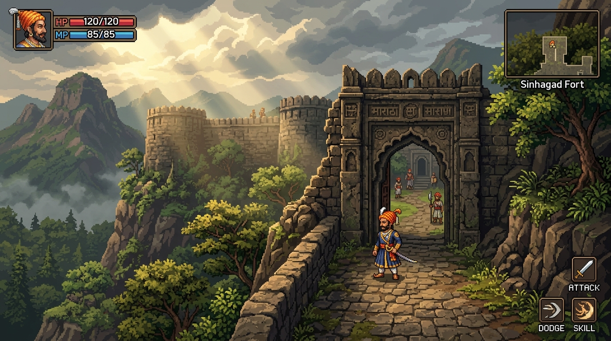
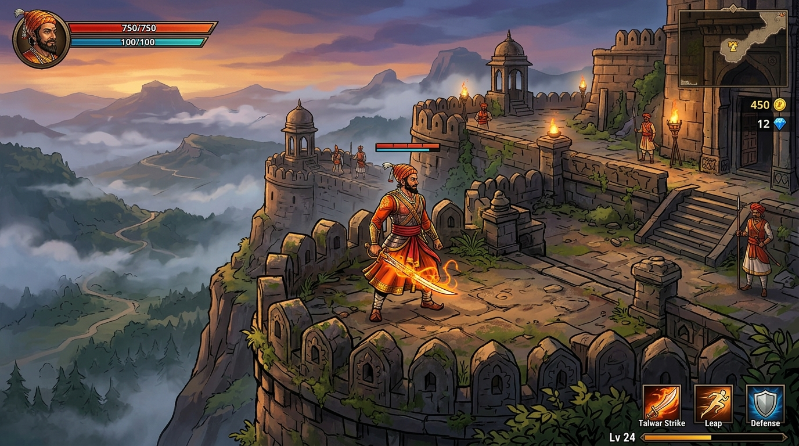

Evaluated against: visual quality, character expressiveness, open-world readability, animation requirements, browser performance, asset production workload, engine compatibility, and offline desktop feasibility.

Style: Hand-crafted high-resolution painted digital art with layered raster environments (similar to Hades or Hollow Knight).
Verdict: Gorgeous presentation, but high animation overhead and immense memory weight make it impractical for a lightweight browser-based RPG.

Style: Detailed high-resolution 32-bit pixel art ($48\times 64\text{px}$ character cells, $32\times 32\text{px}$ tiles) inspired by masterworks like Sea of Stars and Eastward.
Verdict: The ideal choice. Delivers chiseled Sahyadri rock textures, crisp combat hitboxes, authentic regalia, and flawless browser performance.

Style: Stylised cel-shaded 2D action RPG art with bold outlines and painted vector textures (similar to Bastion or Cult of the Lamb).
Verdict: High visual appeal. We adopt its high-res character portrait style for story dialogue and cutscenes while keeping Option B for world gameplay!
See how the existing 160×160 logical canvas compares to the proposed 480×270 (16:9) high-resolution virtual canvas. The new resolution provides 5× the world field of view and eliminates blurry scaling artifacts.
Full classification of existing assets across 14 directories. Approved art packs are safeguarded; no file is removed until replacements are verified.
| Category | Asset Filename | Native Dimensions | Current Status | Action & Architectural Migration |
|---|---|---|---|---|
| 01_Shivaji | shivaji_idle.png |
48 × 128 (24×32 cells) | REPLACE | Redraw at 48×64px with authentic pheta, sirpech, and pleated angarkha (Gate B). |
| 01_Shivaji | shivaji_walk.png |
96 × 128 (24×32 cells) | REPLACE | Redraw with fluid 8-frame walking cycle and natural cloth physics. |
| 01_Shivaji | shivaji_attack.png |
72 × 128 (24×32 cells) | REPLACE | Implement 3-phase combat combo (slash, ascending cut, lunge) with readable windups. |
| 01_Shivaji | shivaji_dodge.png |
72 × 128 (24×32 cells) | REPLACE | Replace roll with tactical sidestep evasion dash and invulnerability timing. |
| 02_Enemies | swordsman.png |
64 × 96 (16×24 cells) | REPLACE | Replace generic green soldier with historically informed Adilshahi / Mughal infantry. |
| 02_Enemies | shield_guard.png |
72 × 96 (18×24 cells) | REPLACE | Redesign with clear block stance and directional counter-play vulnerability. |
| 02_Enemies | archer.png |
64 × 96 (16×24 cells) | REPLACE | Add distinct aiming telegraph and visible flight physics for arrows. |
| 02_Enemies | charging_soldier.png |
80 × 96 (20×24 cells) | REPLACE | Remove unhistorical horned helmet; replace with plate-and-brigandine shock troop. |
| 02_Enemies | elite_guard.png |
88 × 112 (22×28 cells) | REPLACE | Tall 56px halberdier with wide circular sweeps and defensive poise. |
| 03_Bosses | afzal_khan.png |
108 × 176 (36×44 cells) | REPLACE | Massive 64×80px bespoke sprite with multi-phase crushing cleaves and grapple tells. |
| 03_Bosses | shaista_khan.png |
84 × 144 (28×36 cells) | REPLACE | Agile night-stealth encounter with rapid evasion across Lal Mahal chambers. |
| 03_Bosses | aurangzeb.png |
108 × 176 (36×44 cells) | REPLACE | Imperial final encounter with gold damascened armor and divine warding summons. |
| 04_Astras | agni/varuna/bhoomi_effects.png |
128 × 64 (32×32 cells) | UPGRADE | Retain excellent core color swatches; upgrade into layered particle burst animations. |
| 05_Weapons | talwar_basic / upgraded |
16 × 16 icons | RETAIN | Retain as HUD inventory icons; supplement with high-res inspect dialogue illustrations. |
| 07_Terrain | grass, dirt, stone, water |
128 × 16 (16×16 tiles) | REPLACE | Upgrade to 32×32px high-res tilesets with rich natural blending masks (Gate C). |
| 08_Trees | forest_trees, sagwan_trees |
128 × 96 (32×48 cells) | REPLACE | Scale to 64×96px majestic Sahyadri teaks with decoupled canopy Y-sorting. |
| 10_Forts | fort_walls, gates, towers |
128 × 48 to 128 × 96 | REPLACE | Rebuild as monumental modular fort architecture (Buruj bastions, Devdi gates). |
Unified silhouette, equipment profile, color identity, and animation requirements for every major archetype.
The structural paradigm shift from arcade stages to a continuous Sahyadri open world with persistent territory tracking.
In the new engine, Character Level reflects Shivaji's personal martial prowess (earned via XP from combat, exploration, and missions). Reaching Character Level 25 no longer teleports the player; rather, it prepares them to travel across the Javali mountain pass to the physical fortress of Pratapgad.
The entire world is mapped into unified coordinates $(X_w, Y_w)$. Regions (Sahyadri Forest, Pratapgad, Pune & Lal Mahal, High Garrisons, Raigad) are seamlessly connected with natural geographic transitions: steep mountain passes, wooden river footbridges, and fortified gatehouses.
Liberated villages remain peaceful, with friendly villagers and saffron Bhagwa Zenda banners. Fort gates remain physically open once unlocked. Defeated local garrisons are replaced by Swarajya patrol guards who assist Shivaji when wild bandits or enemy raiding parties approach.